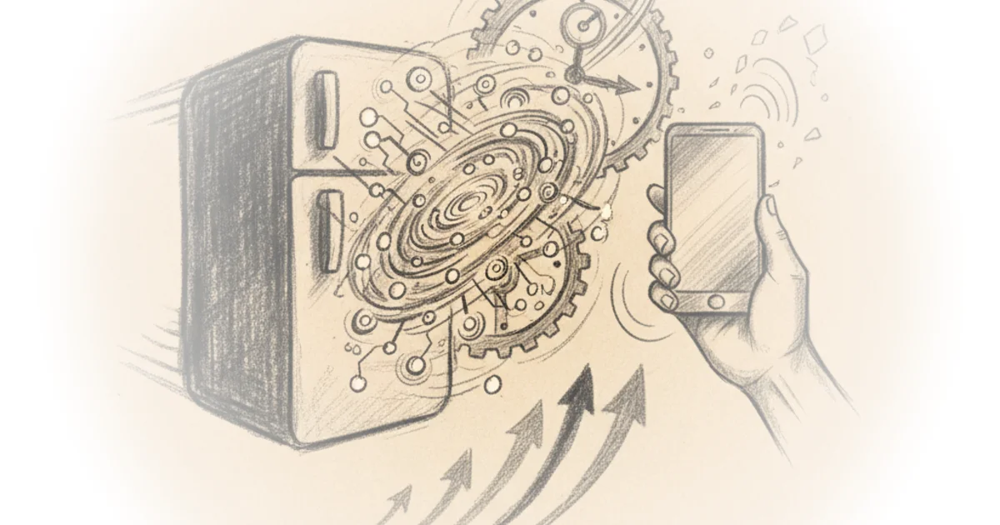
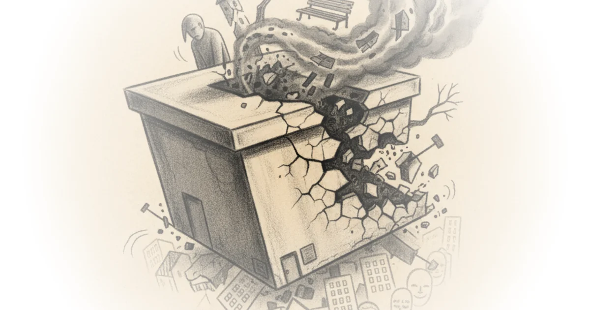

Languages and Literatures: Cuneiform Civilizations Wes Cecil · Wes Cecil ·Oct 4, 2012 · 48 min read · Philosophy
Simone de Beauvoir Her Life and Philosophy Wes Cecil · Wes Cecil ·Sep 1, 2012 · 48 min read · Philosophy
Jean-Paul Sartre His Life and Philosophy Wes Cecil · Wes Cecil ·Sep 1, 2012 · 50 min read · Philosophy
Friedrich Nietzsche's Life and Philosophy Wes Cecil · Wes Cecil ·Aug 29, 2012 · 60 min read · Philosophy
China's Overcapacity Trap and the Limits of Escalation Dominance Brian Edwards 2 sources · PolyMatter · null min read
Probing the Blue Blob: How Russia's Drone and Jet Incursions Are Rewriting NATO's Rules Brian Edwards 2 sources · Perun · null min read
The Supreme Court Strikes Down Emergency Tariffs — And the White House Doubles Down Brian Edwards 2 sources · LegalEagle · null min read
After the Raid: Venezuela's Hard Chapter Begins Brian Edwards 2 sources · CaspianReport · null min read
Between Panic and Denial: Two Philosophers Map the Real Stakes of AI Safety Brian Edwards 2 sources · Cosmic Skeptic · null min read
Two Histories of AI, One Uneasy Present Brian Edwards 2 sources · Crash Course · null min read 
Tokyo's Two Crowning Crowds: The Scramble and the Station That Actually Wins Brian Edwards 2 sources · Not Just Bikes · null min read
Two Fault Lines in the Global Economy: China's Hidden Fragility and Washington's Tariff Gambit Brian Edwards 2 sources · Economics Explained · null min read
The Big Box Reckoning: What to Do With America's Empty Retail Hulks Brian Edwards 2 sources · Not Just Bikes · null min read 